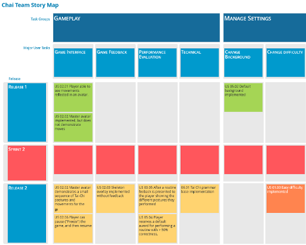

For a Software Engineering course at the University of Alberta, I was part of a group tasked with creating an application to help children diagnosed with developmental disorders learn Tai Chi. We used the Unity Game engine and the Microsoft Kinect and were required to adhere to Agile principles during development.

CMPUT 401 is a course I took in my undergrad in which the students form groups and work to develop software for real clients. Kinect Tai Chi was born as a collaboration between researchers at the University of Alberta (in Canada) and the University of Sapporo (in Japan). The goal was to develop a game that made learning Tai Chi (a traditional Chinese martial art involving a series of calm, focused movements) fun, affordable, easy, and convenient. The hypothesis of the project was that the slow/methodical movement of Tai Chi would help developmentally challenged children with physical, social, and cognitive development. A Microsoft Kinect was used to both record and analyze the user’s movement, while the game components were built with the Unity game engine utilizing the Kinect SDK.
The core of the game works by having someone who knows Tai Chi (the “expert”) perform it while recorded by the Kinect via our software. This creates a file with information of where each of the user’s joints were for each frame of the recording. During gameplay, the player controls an avatar while an identical avatar replays the recorded “expert” movements. The pictures below demonstrate this, showing me playing the game, and an early version of the game interface. We compared the x, y, and z angles of the player avatar’s joints against the joints of the expert avatar to determine whether or not a match was found. A large part of the requirements were that this game had to be attractive to kids, so we implemented character, music, and level selection, performance based scoring, and used interesting and flashy 3D models. Developing this project was a great experience, as I got to work with real clients, create a game with broader aspirations than entertainment, and consolidate my knowledge of Agile methodologies.

Since adhering to Agile principles was required for development, and a large part of how the projects were evaluated, making software was not the only priority to ensure success. For the software, rather than one large part of the project, I worked on many small tasks. I implemented character selection, avatars, skeleton overlay highlighting, and generally helped where I could to keep the project working and consistent. On the Agile end, I made a lot of contributions to keeping the group organized and on task. I made the storymaps (partly pictured here), the Gantt charts, revised user stories and feasibility as we progressed, and assigned and managed tasks. Agile development really showed me how much better things can be if you’re organized from the start. Yes, it initially takes time, but in the long run I believe it more than makes up for it.
The biggest issue we encountered working on this project was that the granularity to which the Kinect could record and detect people, was not fine enough for all Tai Chi. If the Kinect gets confused from say, turning around, it tries to interpolate your joints to where it thinks they should be. Often this causes very erratic and impossible motions to be recorded, and limits the Tai Chi movements that can be used. This problem arose in gameplay as well, as sometimes the kinect would lose track of the player, interpolate it, and cause the game to respond in ways it shouldn’t. Some challenges arose initially, mostly due to the learning curve of the subject matter. Things like version control with Unity, finding usable assets for the game, and communication with our clients all caused problems in the beginning. Despite these challenges, the project went well and I’m very proud of what we produced. Below you can find a screencast of our project which we presented at the end of the course. Source code is unavailable as the project was continued by the University of Alberta, and contains some licensed closed-source code.

A 2D game written in Python and created for a capstone game development course at the University of Alberta.

A social media style website project created with Django, AngularJS, Node.js and Openshift, in a team of five.

Cache_22 is a story-based rhythm game with moral choice and dance battles, made with BioWare's Neverwinter Nights engine.